Karnataka's Janaspandana (iPGRS), judged from a village with one shared phone.
Run by the Praja Seve Department Built by the Centre for Smart Governance
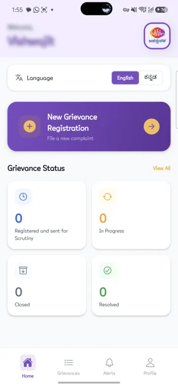
portal, 22 Oct 2026; app test, 22 Oct 2026
Five doors, one desk
App
Website
Helpline 1902
Service centresGrama One, Bapuji Seva Kendra, Karnataka One, Bangalore One
X @iPGRSKarnataka
Janaspandana
40+
departments
Launched 1 Nov 2021 Open 24/7
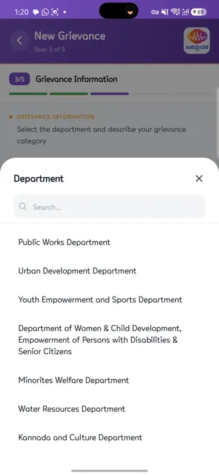
0
complaints filed
479,924 marked “resolved” (94%)
Website: “disposed”. Dashboard: “resolved”. Both count officer closures, not fixes.
portal and dashboard, 22 Oct 2026
Where a complaint goes
Filed
Registered and sent for Scrutiny
In Progress
Closed by Officer
Resolved (Feedback Taken)
ATR Action Taken Report
G-ID
Not satisfied?
L1
L2
L3
7 days each 21 in total
Day 22: no next step in the app
RTI
Lokayukta
Sakalaunverified
Status words: app test, 22 Oct 2026; levels: GO of 23 May 2025, portalLevel 2 and 3 'appellate' names: from a citizen guide only (unverified)
18 taps to report one street light
Dead street light Village address, profile already filled
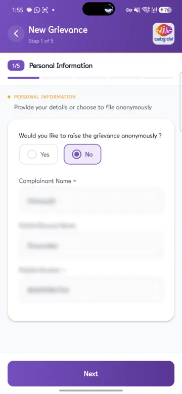
Step 1
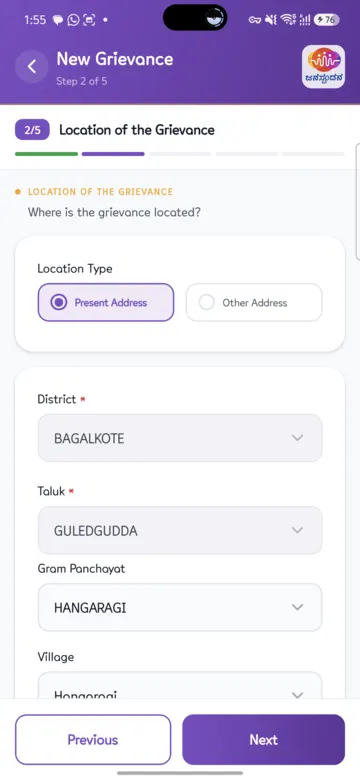
Step 2
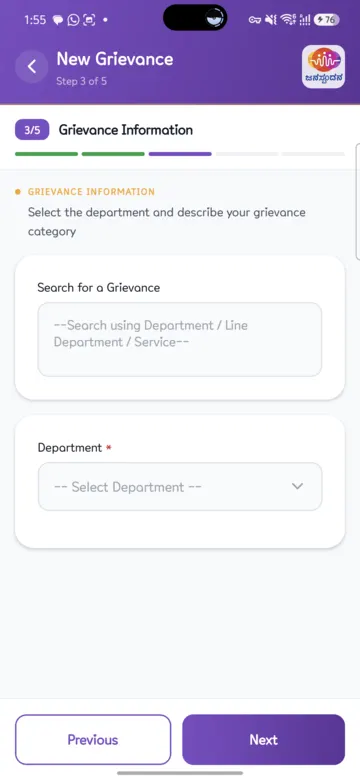
Step 3
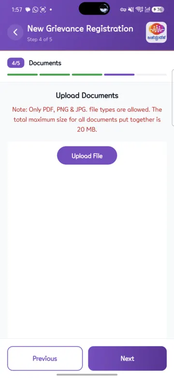
Step 4
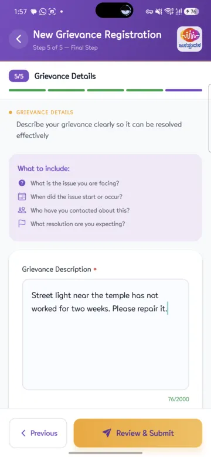
Step 5
18taps
5 dropdown choices 140 s for our scripted run
Search: nothing after 8–10 s
Revenue lists: never loaded (30+ s)
No microphone button
No due date shown
app test, S24 FE, 22 Oct 2026
After you file: who is on it?
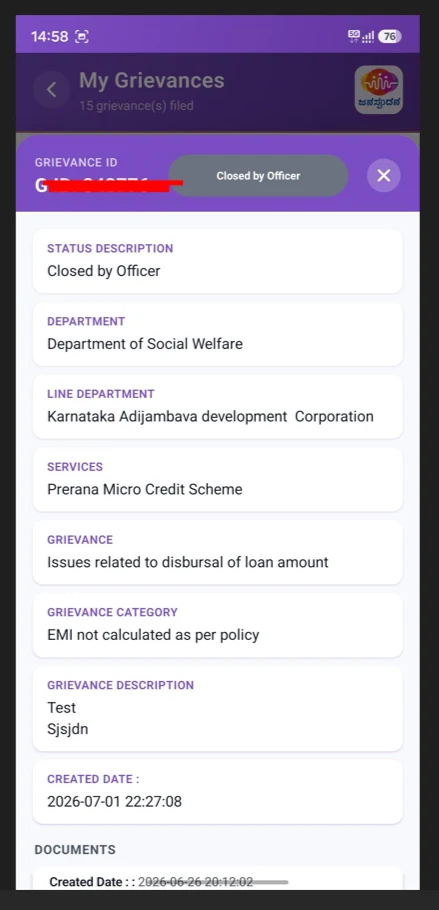
Shown
Grievance ID
Status
Department
Service
Your own text
Date you filed
Not shown
Officer’s name
Officer’s phone
Due date or days left
Level (1, 2 or 3)
When the officer closes it, three buttons:ViewView ATRGive Feedback
The app’s own screens on Google Play, read 22 Oct 2026
We asked four questions
15
Digital literacy
Can someone with little phone skill finish alone?
Needs outside help
Finishes unaided in own language
Accountability after closure
If it's closed but not fixed, can I reopen it and see who answers?
No way back
Easy reopen, named officer, proof
Citizen effort
How many taps, minutes and choices?
Over 30 taps
Under 8 taps
Trust and transparency
Do I see status, deadline and honest results?
Hidden
All public
The report card
Digital literacy
2/5
Kannada in 1 tap, but 5 list levels, officials' words, no voice
Accountability after closure
2/5
21 days and 3 levels exist; users report no reopen button
Citizen effort
3/5
18 taps, 140 s; silent search, dead lists
Trust and transparency
3/5
68.73% on time: 3 in 10 late; post-filing screens unverified
2.5 / 5
overall, average of four
App test, 22 Oct 2026; portal, 22 Oct 2026; Play reviews, 24 Mar 2025 and 19 Dec 2025
Closed is not fixed
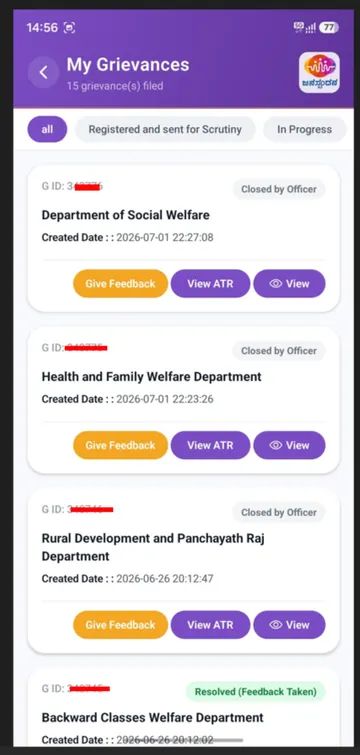
Closed by Officer✓
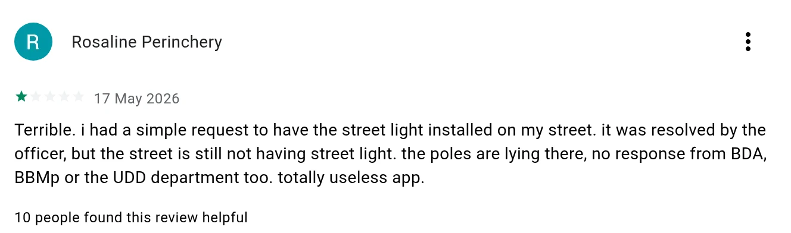
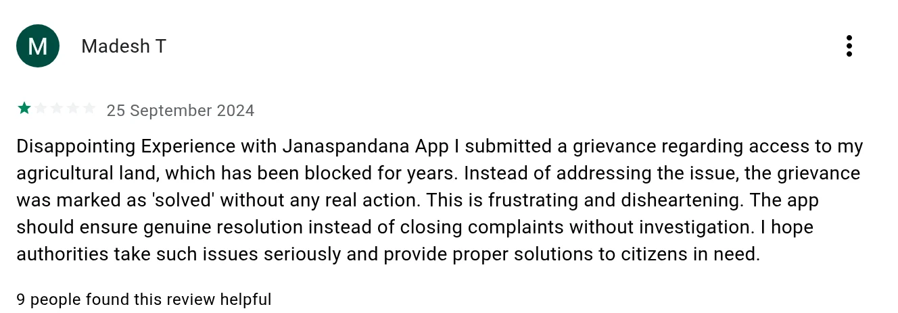
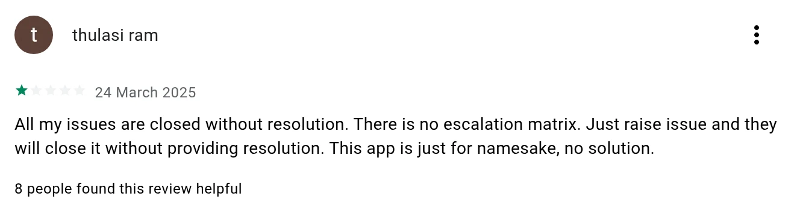
Real 1-star reviews, Google Play, read 22 Oct 2026. App rated 3.3 from 378 reviews. Reviews are self-selected, not a sample.
So people go to the Chief Minister
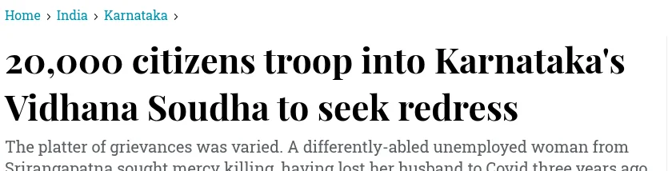
“If disposal happens at the lower level, people will not come to Bengaluru.”Chief Minister Siddaramaiah, Deccan Herald, 9 Feb 2024
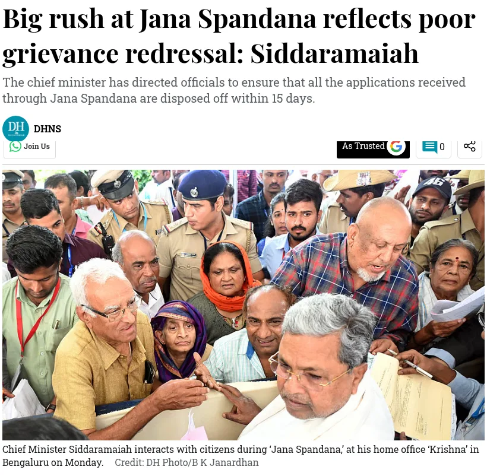
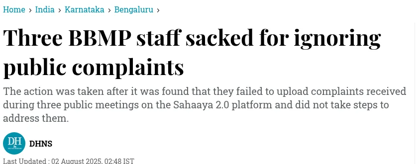
Deccan Herald, 28 Nov 2023, 9 Feb 2024, 2 Aug 2025
Seven fixes, where they land
Filed
Registered and sent for Scrutiny
In Progress
Closed by Officer
Resolved (Feedback Taken)
1Make search work
2Cut list levels
3Voice and photo first
4Plain words
5Show deadline and officer
6Reopen always, with proof
7Show errors and a helpline
Then 'resolved' means the light is on.
app test, 22 Oct 2026; Play review, 19 Dec 2025
Questions we expect
What is the official time limit?
21 days for grievances, 7 per level, since 23 May 2025. The CM’s “15 days” was a verbal order for one 2023 event.
portal, 22 Oct 2026; Deccan Herald, 28 Nov 2023
Does “disposed” mean “fixed”?
No. The website says “disposed”, the dashboard says “resolved” (479,924). Total = resolved + pending, so officer closures count as resolved.
portal and dashboard, 22 Oct 2026
Why score trust 3/5 when you could not see status?
The public dashboard and the levels count. The post-filing screens are unverified.
app test, 22 Oct 2026
Did you file a real complaint?
No. We stopped before Review & Submit.
app test, 22 Oct 2026
What if all three levels fail?
RTI for the records, the Lokayukta for officer misconduct, or Sakala for late services. Sakala compensation figures: unverified.
portal, 22 Oct 2026
Sources: ipgrs.karnataka.gov.in (About page, dashboard, GOs of 9 Aug 2021, 23 May 2025, 21 Jul 2026); phone test log, 22 Oct 2026; Deccan Herald, 11 Dec 2021, 28 Nov 2023, 9 Feb 2024; Play Store reviews (com.csg.ipgrs); citizen guide complainthub.org (unverified).